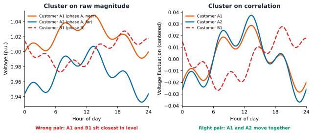

{'converged': True,
'n_buses': 61,
'n_lines': 59,
'n_loads': 31,
'n_transformers': 1,
'total_p_loss_kw': 0.6107992120127365,
'total_q_loss_kvar': 0.15519491021295995}Chapter 3: Phase Identification from Smart-Meter Data
Chapter 1 named phase balance as one of three limits every low-voltage feeder operates under, alongside thermal and voltage constraints, and made a quieter claim alongside it: the phase each customer connects to is information no meter reports. Every study in Chapters 1 and 2 relied on that information anyway, taken directly from the network model’s own bus1 definitions, and never checked. This chapter examines what that assumption is worth.
In practice, a utility’s phase records rarely match the network exactly. Service connections get re-terminated during storm repairs and equipment swaps without the change reaching the record system; decades of ad hoc feeder edits accumulate drift between the as-built network and the as-documented one. Short’s own motivation for building a metering-based correction method was exactly this gap: utility phase records are compiled by hand over decades of field work and are known, chronically, to disagree with the physical network in ways no one catches until something downstream stops making sense [1]. Every unbalance calculation, every hosting-capacity study like the one Chapter 2 ran, and every state estimate a distribution system operator (Distribution System Operator (DSO)) produces inherits whatever phase labels the model happens to carry, correct or not, with no independent way to catch the difference from the network model alone.
This chapter asks whether that gap can be closed without sending anyone into the field. A smart meter cannot report its own phase directly, no more than it can report a neighboring bus’s voltage, but it reports something that turns out to depend on phase in a very specific way: its own voltage, read over time. What follows works through why that dependency exists, tests a method built on it against a real, known answer, and is honest about where the method breaks.
Why voltage carries a phase signature
A three-phase low-voltage feeder splits into single-phase service drops at various points along its length, each drop landing on phase A, B, or C. Every customer on the same phase shares two things no customer on a different phase shares: the same upstream conductor path back to the transformer, and therefore the same phase-to-neutral voltage reference riding on that path. When aggregate demand on phase A rises anywhere along the feeder, every customer downstream on phase A sees a correlated dip in its own voltage, driven by the same current flowing through the same shared impedance. A customer on phase B, drawing a similar amount of power at the same moment, sees no such dip, because phase B’s conductor and phase B’s demand are what set its voltage instead.
Active or reactive power consumption carries no equivalent signal. Two households on different phases can have nearly identical demand profiles simply because they keep similar schedules, while two households on the same phase can have very different demand and still show near-identical voltage fluctuation, because it is the shared electrical path, not the shared behavior, that produces the correlation. Phase identification from smart-meter data is therefore a voltage problem, not a power problem, and any method that starts from power alone is starting from the wrong signal.
This is not a new observation. Short first proposed recovering phase connectivity from correlated voltage magnitude at scale, using advanced metering infrastructure already deployed for billing [1]. Two directions have extended that idea since. Blakely and Reno built an ensemble spectral-clustering method around the co-association matrix formed by resampling the correlation-based clustering many times, avoiding a dependency on any prior phase labels at all [2]. Hangawatta, Gargoom, and Kouzani took a supervised route instead, training a neural network directly on consumption data at the low sampling rates typical of real deployments, closer to the resolution this chapter’s own data uses [3]. Hoogsteyn, Vanin, Koirala, and Van Hertem benchmarked a range of these methods against each other under varying meter accuracy and deployment density, producing exactly the kind of sensitivity findings this chapter reproduces independently in its own closing section [4].
One study sits closer to this chapter than any of the others. Simonovska and Ochoa combined principal component analysis with unconstrained k-means clustering on smart-meter voltage traces and tested it on a real, anonymized 31-customer low-voltage feeder under varying levels of Photovoltaic (PV) penetration [5]. That feeder is the same one this book has used since Chapter 1. The method built and tested below follows the same principle, correlation structure over raw readings, dimensionality reduction, then clustering, checked here against this feeder’s own real phase records rather than assumed correct.
Key Concept
Correlation, not magnitude, is the signal. Two voltage traces that look similar in absolute level can be weakly correlated, and two traces at different absolute levels can be strongly correlated, if they move together over time. For customers \(i\) and \(j\) with voltage traces \(v_i, v_j \in \mathbb{R}^{T}\) over \(T\) real time steps, Pearson correlation \[ \rho_{ij} = \frac{\sum_{t=1}^{T} (v_{i,t} - \bar{v}_i)(v_{j,t} - \bar{v}_j)}{\sqrt{\sum_{t=1}^{T} (v_{i,t} - \bar{v}_i)^2}\sqrt{\sum_{t=1}^{T} (v_{j,t} - \bar{v}_j)^2}} \] is invariant to each customer’s own absolute voltage level, entering only through the centering \(\bar{v}_i\), \(\bar{v}_j\), and the normalization in the denominator. A phase-identification method that clusters on raw voltage magnitude is answering “which customers have a similar voltage level,” a question dominated by each customer’s distance from the transformer. A method that clusters on \(\rho_{ij}\) is answering “which customers’ voltage moves together,” the question that actually tracks phase membership. The rest of this chapter tests both and reports what the difference costs in practice.

Getting the data
This chapter reuses the same Low Voltage (LV) network and smart-meter data Chapters 1 and 2 vendored, no new fetch step required:
uv run python scripts/fetch_part4_ausnet_data.pyThe feeder, again
Every result below runs on the same 31-customer AusNet feeder Chapters 1 and 2 already built and solved: the same distribution transformer, the same line segments, the same single-phase service cables. This chapter’s only new question is whether the phase label attached to each of those service cables in the network model is actually correct.
Where the real answer is hiding
Checking a method against a known answer requires a known answer, and this feeder happens to have one, buried one level deeper in the network model than it first appears. Every load’s own bus1 in this network ends in .1, the same for all 31 customers, which looks like it means every customer sits on phase A. It does not: a single-phase bus only ever has one local node, so its own node index is always 1, regardless of which physical phase actually feeds it. The real phase assignment lives one step upstream, on the service line that feeds that bus. That line’s own bus1, the tap point on the three-phase backbone, ends in .1, .2, or .3, and that suffix is the customer’s actual phase.
Eleven customers on phase 1, ten on phase 2, ten on phase 3, matching this feeder’s own documentation exactly. Every method tested in the rest of this chapter is checked against this same real answer, not against its own assumptions.
A voltage time series, one per customer
Driving each customer with its own smart-meter reading, the same LoadShape mechanics Chapter 2 introduced, and solving across a full day produces one voltage time series per customer, the raw material every method below draws from.
A first, naive attempt
The most direct application of the theory above skips a step. Treat each customer’s 48-point voltage trace as a feature vector, reduce it to two dimensions with Principal Component Analysis (PCA), and cluster the result into three groups. It is worth running this exact approach before reaching for anything more careful, and checking it honestly against the real answer already in hand, rather than assuming a plausible-sounding method works.
Every result below is checked against that real answer with the Adjusted Rand Index (ARI), the same chance-corrected agreement measure Part 4 Chapter 4 uses later in this book to check a discovered clustering against a genuine ground-truth label: \[ \text{ARI} = \frac{\sum_{ij}\binom{n_{ij}}{2} - \left[\sum_i \binom{a_i}{2}\sum_j \binom{b_j}{2}\right]\big/\binom{n}{2}}{\frac{1}{2}\left[\sum_i \binom{a_i}{2} + \sum_j \binom{b_j}{2}\right] - \left[\sum_i \binom{a_i}{2}\sum_j \binom{b_j}{2}\right]\big/\binom{n}{2}} \] where \(n_{ij}\) counts customers placed in real phase \(i\) and discovered cluster \(j\) at once, and \(a_i\), \(b_j\) are each partition’s own group sizes [6]. A score of 1.0 is a perfect match to the real phase labels; 0.0 is no better than the agreement random chance alone would produce.
PCA on raw voltage barely beats a coin flip. An adjusted Rand index of 0.24, where 1.0 is a perfect match to the real phase labels and 0.0 is no better than random assignment, means the clusters this approach finds only weakly track the real answer. Nothing here is a coding error: every customer’s raw voltage trace is dominated by the same feeder-wide daily demand cycle, the shared shape PCA finds first because it explains the most overall variance in the raw data. Phase membership is a smaller effect sitting underneath that shared pattern, exactly the distinction the concept box above predicted, and standard PCA on raw magnitude has no reason to prioritize it.
Clustering the correlation instead
The fix is not a different clustering algorithm. It is a different question asked of the same underlying data: instead of asking which customers have similar voltage traces, ask which customers’ voltage moves together. The pairwise correlation matrix between customers directly answers that question, with the shared feeder-wide pattern present in every pair roughly equally and therefore no longer the dominant source of variance.
Customers on the same real phase already correlate above 0.98 in this matrix; customers on different phases sit closer to 0.5 to 0.8. The phase signal is visible directly in the numbers before any clustering algorithm runs at all.
The same PCA-plus-k-means recipe as the naive attempt, applied to the correlation matrix instead of the raw readings, recovers every one of the 31 customers’ real phases exactly, an adjusted Rand index of 1.0. Nothing about the clustering step changed; only what it was asked to cluster did.
Three tight, well-separated groups, colored here by the real phase label rather than the predicted one, since the two are identical for every customer on this feeder.
Would this have found three groups unsupervised?
The number of phases, three, was supplied going in. A working deployment often does not know the right number of groups in advance, so it is worth asking whether the data itself would have revealed it. The silhouette score answers that directly: for customer \(i\), with \(a(i)\) its own mean distance to every other member of its assigned cluster and \(b(i)\) its mean distance to the nearest cluster it does not belong to, \[ s(i) = \frac{b(i) - a(i)}{\max\big(a(i), b(i)\big)} \] averaged over every customer to give one score per candidate \(k\). A customer sitting much closer to its own cluster than to any other scores near 1; a customer sitting about equally close to both scores near 0.
Three is the clear peak across the range tested, not an assumption smuggled into the method. This same correlation structure could have surfaced the right number of phase groups without being told what to look for.
How much data does this actually need?
A perfect result on one full day, from all 31 meters, answers the methodological question but not the practical one. Two questions matter before recommending this method for actual use: how long a voltage history is required, and how many meters actually need to be reporting. Both are worth checking directly rather than assumed.
Two hours of readings is unreliable, an adjusted Rand index of 0.53. By twelve hours, half a day, recovery is already perfect on this feeder. A shorter deployment window is possible, but it trades away margin, not just convenience.
Meter density is the second question: how many of the feeder’s 31 customers actually need to be reporting, tested here by sampling smaller subsets at random, ten trials per subset size, since which specific customers get chosen matters as much as how many.
Below about seven meters, results stop being trustworthy, not just noisier. Above seven, roughly two to three per phase on this three-phase feeder, recovery is consistently perfect across every random subset tried. Below it, results swing widely: sometimes still perfect, sometimes failing outright, because a small random draw can miss one phase entirely or leave a phase group down to a single member with nothing to correlate against. The method does not degrade gracefully as data shrinks; it fails unpredictably, which matters more for an actual rollout than the average case alone, and matches the meter-density sensitivity Hoogsteyn et al. report across other phase-identification methods [4].
Does the choice of association measure matter?
Every result so far clusters on Pearson correlation, a measure of linear relationship. That was a choice, not the only option, and it is worth checking directly. Spearman and Kendall generalize Pearson to monotonic relationships rather than strictly linear ones. Mutual information and the Predictive Power Score (PPS) go further still, capturing any dependency a model can exploit, linear or not. The full 24-hour window this chapter has used throughout is the easy case, every method tested recovers phase perfectly there. The real test is whether that holds under the same 2-hour window that already broke Pearson. Spearman and Kendall come from voltage_df.corr(method=...) directly; mutual information and PPS each need their own small helper to turn a per-pair score into the same kind of customer-by-customer similarity matrix the correlation-based methods already produce, one call to sklearn.feature_selection.mutual_info_regression per customer for the first, one call to ppscore.matrix for the second.
Pearson, Spearman, and Kendall, three different ways of measuring a monotonic relationship, all degrade together under 2 hours of data. Mutual information and PPS do not: both hold onto most of their accuracy well past the point where linear and rank correlation give out, because they capture dependency structure those three measures cannot see. A sixth measure, xicor, a newer asymmetric rank-based coefficient, was checked the same way in a separate environment (its latest release requires an older pandas than the rest of this book uses, so it cannot be pinned as a project dependency here) and degraded with the other rank-based measures rather than with mutual information and PPS, consistent with being fundamentally a rank measure itself, not a Pearson-specific weakness. The distinction that matters is not linear versus nonlinear correlation values, all six methods report numbers on different scales, it is which measures still separate phases correctly when the window is barely longer than the noise itself, worth checking before trusting a chosen method on a short deployment window.
Naming the clusters with a handful of known customers
Everything so far assumes the full, real phase list is available to check against, but an actual rollout does not start with that. Clustering on voltage correlation groups customers correctly, an adjusted Rand index of 1.0 says so, but a cluster label like “0” or “1” carries no information about which real phase it actually is. Naming the clusters requires some reference: a handful of customers whose real phase is already known, from a recent service record or a spot check, used to vote on what each cluster should be called. The practical question is how many of those known customers are actually needed.
One known customer names, on average, only one of the three clusters correctly, the other two stay unresolved. Naming reliably, getting every customer’s label right nearly every time, takes about eight to twelve known customers, roughly three to four per phase. That is a much smaller ask than full ground truth, and it turns clustering, which only groups customers, into labeling, which names them.
Beyond a point estimate: conformal phase-assignment confidence
Naming the clusters still produces one label per customer, with no signal for which labels to trust. A utility deciding where to send a limited field crew needs exactly that signal: which assignments are solid, and which deserve a second look before anyone relies on them. Split conformal prediction supplies it with a statistical guarantee attached, not just an ad hoc score.
The idea: for each candidate phase, measure how far a customer’s own correlation-embedding position sits from that phase’s centroid, built only from the known anchor customers. Calibrate a distance threshold using the anchors’ own leave-one-out scores against their real phase, at a chosen confidence level. Then, for every customer, report the set of phases within that threshold, not a single guess. A confident customer gets a single-phase set. An uncertain one gets more than one phase, or none at all if it does not sit close enough to any of the three centroids, itself a signal that something about that customer’s data is unusual and worth a closer look.
With \(A_p\) the set of known anchor customers on real phase \(p \in \{1, 2, 3\}\) and \(e_i\) customer \(i\)’s own embedding position, phase \(p\)’s centroid is \(\hat{c}_p = \frac{1}{|A_p|}\sum_{j \in A_p} e_j\). The distance threshold is calibrated leave-one-out: for each anchor \(j \in A_p\), its nonconformity score is its own distance to the centroid built from every other anchor of its real phase, \[ r_j = \lVert e_j - \hat{c}_p^{(-j)} \rVert_2, \qquad \hat{c}_p^{(-j)} = \frac{1}{|A_p| - 1}\sum_{j' \in A_p \setminus \{j\}} e_{j'} \] and \(\tau\) is the \((1-\alpha)\) empirical quantile across all \(m = \sum_p |A_p|\) anchors’ own scores \(\{r_j\}\), the same finite-sample calibration recipe as every other conformal threshold in this book [7]. Every customer \(i\), known or new, then gets a prediction set, not a single label: \[ \hat{S}(i) = \big\{\, p : \lVert e_i - \hat{c}_p \rVert_2 \le \tau \,\big\} \] built from centroids fit on the full anchor sets this time, not held out. Four small functions implement this: one to build each phase’s centroid from its anchor customers, one to score a point’s distance to a given phase’s centroid, one to calibrate \(\tau\) from the anchors’ own leave-one-out scores, and one to assemble the resulting prediction sets \(\hat{S}(i)\).
A calibration set of ten known customers is enough to test this, the same order of magnitude the labeling sweep above already found reliable. On the full 24-hour correlation embedding, where the point estimate is already perfect, most customers get a clean single-phase set.
Confidence only earns its keep when the point estimate can actually be wrong. The window-length sensitivity earlier in this chapter already found that case: a 4-hour window still clusters well, an adjusted Rand index near 0.90, but not perfectly. Running the same conformal method on that shorter, noisier embedding checks whether it flags the customer the point estimate actually gets wrong, or just adds noise of its own.
Key Concept
Four customers get flagged, all four the same real phase, and the one customer the point estimate actually mislabels is among them. The other three happen to keep their correct point-estimate label anyway, but their embedding position under the noisier 4-hour window sits too far from the anchor-derived centroid to earn a confident single-phase set. That is a more useful result than flagging one lucky-or-unlucky customer alone: it says an entire phase group’s evidence has gotten weaker under this window, not just that one guess happened to land wrong. A point estimate alone offers no way to tell a solid label from a lucky guess. A conformal prediction set does, with a statistical coverage guarantee behind it rather than an arbitrary score, at the cost of only the same handful of known customers the labeling step already needed.
What one 31-customer feeder cannot answer
Every result above is real, and every one of them is checked against one specific, residential, 31-customer AusNet feeder. Honesty about a method’s own limits means naming what that single feeder cannot settle, not just what it can.
Generalization to non-residential loads and other topologies is untested, not assumed to hold. The mechanism this chapter relies on, same phase means same shared conductor path means correlated voltage, does not itself depend on a customer being residential: a three-phase commercial load or a large motor still shares that same physical path with everyone else on its phase. But this feeder carries only real households, so whether a non-residential customer’s own noisier, spikier real demand degrades the correlation signal, rather than just adding a different real shape to it, is a genuine open question this data cannot check. The same honesty applies to topology: this is one real feeder with one real transformer and one real backbone. A feeder with multiple parallel backbones, switchable ties, or a meshed low-voltage topology could break the assumption that “same phase” and “same upstream path” are the same thing, and that case was not tested here because this feeder does not have one.
Distributed generation was checked by this chapter’s own closest precedent, not by this chapter itself. Simonovska and Ochoa tested the same PCA-plus-clustering principle on this exact feeder under varying PV penetration levels and found it held up [5]. This chapter’s own additions, the conformal confidence sets and the anchor-based naming sweep, were not re-run under high PV penetration, so whether those additions hold up under the same stress is inherited confidence, not a result this chapter independently verified.
Scalability is a real, computable claim, not a guess. Building the pairwise correlation matrix costs \(O(n^2 T)\), trivial at \(n=31\) customers and \(T=48\) half-hours. A real utility deployment with thousands of meters would need either a substation-by-substation partition, correlating only customers already known to share a transformer, never the full utility-wide population at once, or an accepted \(O(n^2)\) memory cost that a modern machine still handles comfortably into the low thousands of customers per partition. The natural mitigant is structural, not algorithmic: two customers on genuinely different feeders never need comparing in the first place, so the real \(n\) this complexity bound applies to is “customers per candidate feeder,” not “customers utility-wide.”
Data quality beyond a short window or a sparse meter subset is a real gap. This chapter stress-tested window length (down to 2 hours) and meter density (down to a handful of customers), and found mutual information and PPS more robust than correlation once the window gets short. It did not inject the kind of data-quality fault Chapter 6 later builds and tests explicitly, a stuck reading, a communication dropout, a calibration drift, into this chapter’s own phase-identification pipeline. Whether a stuck or drifting meter quietly corrupts a customer’s own correlation with its true phase group, or gets caught by the same conformal confidence set that already catches a noisy 4-hour window, is untested here and a real, concrete extension for whoever picks this up next.
Deployment is a real, statable sequence, not a research question. A utility adopting this needs, in order: a smart-meter voltage history per customer (many Advanced Metering Infrastructure (AMI) deployments already collect this for billing, the same real infrastructure Short’s own 2013 method assumed [1]); a handful of anchor customers per phase with independently verified phase, three to four per phase by this chapter’s own sensitivity sweep, from a recent service record or a physical spot check, never from the clustering result itself being validated; and a periodic re-run as the record system drifts further from the physical network, the same real gap this chapter opened with. The conformal confidence set is the natural integration point into an existing asset-management or Geographic Information System (GIS) system: a customer whose prediction set is empty or contains more than one phase is exactly the exception list a field-verification workflow already knows how to consume, no new category of alert to invent.
The method generalizes to any real number of phases, already demonstrated rather than assumed. Nothing in the correlation-plus- clustering recipe is specific to three groups. The silhouette sweep earlier in this chapter already found the right \(k\) unsupervised on this feeder; the identical sweep would surface \(k=1\) on a single-phase lateral or \(k=2\) on a two-phase spur, the same procedure, not a new one.
Where this leaves Part 4
Phase connectivity for this feeder is no longer an assumption inherited from its .dss files; it is a checked, reproducible result. Correlating real smart-meter voltage readings and clustering on that correlation structure, rather than on the raw readings themselves, recovers every customer’s real phase exactly, using no more than seven meters and twelve hours of data. The same feeder Chapter 2 ran a hosting-capacity study and an Electric Vehicle (EV)-demand study on now has its phase labels independently confirmed rather than merely assumed correct. The deployment story goes one step further than clustering alone: a handful of known customers is enough to name the clusters, and a conformal confidence set on top of that naming tells a utility exactly which assignments to trust and which to send a field crew to check first, a statistically grounded answer none of this chapter’s own references provide.
Part 4 continues with the second of its four threads: customer and feeder clustering, grouping customers by how they actually behave rather than how they are labeled, reusing the ark.plot.clustering tools this chapter introduced.